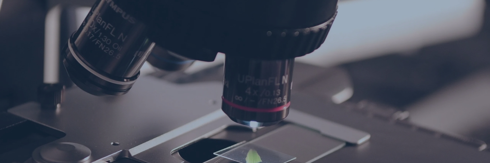
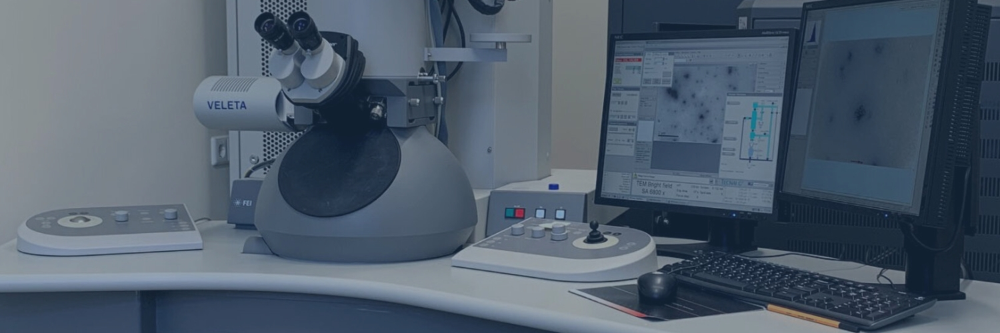

SEM
Scanning Electron Microscopy
SEM
Scanning Electron Microscopy is one of the most widely used techniques in both scientific and industrial fields for studying the surface of samples in great detail. SEM enables us to observe a material's surface with such high resolution that we can detect features down to the nanometer scale. In addition to providing detailed 2D images, SEM can also generate 3D images, offering a more realistic and comprehensive view of the material's morphology. SEM operates by directing a high-energy electron beam onto the sample's surface. When these electrons interact with the atoms of the sample, they cause the emission of secondary electrons. These secondary electrons are then collected by a detector, which converts them into an electrical signal. This signal is processed to create a high-resolution image of the sample’s surface.

TEM
Transmission Electron Microscopy
TEM
Transmission Electron Microscopy takes us deep into the nanoworld, right to the heart of osseointegration. TEM uses a focused beam of electrons that passes through an ultra-thin section of the sample, allowing us to capture incredibly high-resolution images down to the nanometer scale. This enables us to explore the bone-implant interface in extraordinary detail, revealing structures such as collagen fibrils, mineral crystals, and subtle differences between organic and inorganic materials. One of TEM’s greatest strengths is its versatility, while one of its main challenges is the complex sample preparation. Despite these difficulties, the insights TEM provides are unparalleled. It has helped uncover the intricacies of bone mineralization revealing surprising amounts of mineral located outside collagen fibrils and is shaping the way we think about implant design at the molecular level.
Others

EDS
Energy-Dispersive X-ray Spectroscopy (EDS) provides a chemical spectrum of the sample, where each peak or “spike” corresponds to a specific chemical element present on the surface. EDS analysis is often integrated with Scanning Electron Microscopy (SEM) or Transmission Electron Microscopy (TEM) to not only examine the material’s microstructure but also gain detailed information about its elemental composition.
XRD
X-ray Diffraction is a powerful technique used to determine the atomic and molecular structure of crystalline materials. It works by directing X-rays at the sample and measuring the angles and intensities of the diffracted beams. This data is used to determine the spacing between planes in the crystal lattice, allowing identification of crystalline phases and their orientation. To analyze the crystallinity and phase composition of the coating on an implant. Applications in bone-implant research:
Analyzes the crystalline phases of calcium phosphate coatings (e.g., hydroxyapatite) which influence osteointegration.
Assesses coating stability and conversion during in vivo degradation.
XPS
X-ray Photoelectron Spectroscopy is a surface-sensitive quantitative spectroscopic technique that measures the elemental composition at the parts-per-thousand range, as well as the chemical and electronic states of the elements that exist within a material. It uses an X-ray beam to excite electrons, which are then detected and analyzed. To analyze surface chemistry, including elemental composition, chemical states, and types of chemical bonding. Applications in bone-implant research:
Identifies surface functionalization and bonding of biomolecules or coatings.
Assesses surface contamination or oxidation which can influence biological responses.
ELM
Ellipsometry is a non-destructive optical technique that measures the change in polarization of light reflected from a surface. It is highly sensitive to sub-nanometer thickness changes and can analyze layered structures with high precision. To determine the thickness, refractive index, and optical properties of thin films, such as protein layers on implant surfaces.
Applications in bone-implant research:
Monitors protein adsorption (e.g., fibronectin, vitronectin) which mediates cell adhesion.
Evaluates surface modifications such as silanization or self-assembled monolayers (SAMs).
OWLS
Optical Waveguide Lightmode Spectroscopy is an optical biosensing method that detects changes in refractive index close to the surface of a waveguide sensor. It is sensitive to very thin layers (e.g., protein monolayers) and can measure real-time mass adsorption kinetics without labels. To quantify the mass and kinetics of biomolecular adsorption on a surface, with nanogram sensitivity. Applications in bone-implant research:
Analyzes kinetics of protein and peptide adsorption which influence initial cellular responses.
Can be used to study how surface treatments or coatings alter biomolecule interaction.
Micro-CT
Micro-CT imaging is a powerful technique used to visualize and analyze bone formation around implants in high detail. It provides high-resolution, three-dimensional images that allow for the observation of bone-implant interactions, showing the distribution and quality of newly formed bone around the implant. This technique helps assess the extent of osseointegration, monitor changes in bone density, and evaluate the structural integrity of the surrounding bone, offering valuable insights into the healing process and the effectiveness of the implant. Un grande vantaggio della micro-CT è che non richiede la preparazione di campioni complessi, come avviene invece per altre tecniche di imaging, come SEM o TEM.